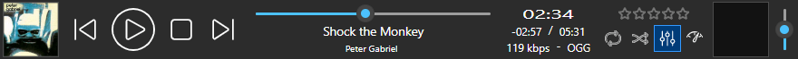

While the other skins are trying to give their own distinct behavior, this one has a different approach—it is created to closely resemble standard Windows applications as much as possible. This includes not only colors but also all other design elements such as borders, hovering effects, and the presence of controls like scrollbars, buttons, and checkboxes. Do you remember the non-skinned version of the old, pre-MM5 program? SysThematic is the closest thing to that with MM5/2024.
The interface of the program with this skin looks compact, but still with great readability, especially with the finely tuned contrast themes[ii]. It provides a clean appearance and does not have anything fancy or out-of-place that could distract you from obtaining the useful information.
This skin is available in two versions. SysThematic Contrast is a simplified, lite version. When used with non-contrast themes, it seems similar to the contrast themes, only with different colors. The choice of contrast themes can be found in Settings > Accessibility > Contrast themes on Windows 11.
The enhanced version, SysThematic Chroma, has a fully optimized appeal with non-contrast themes, particularly Windows (light) and Windows (dark); the choice between them is in Settings > Personalization. The enhanced version has a complete set of carefully created icons based on Windows Fluent design that have a light and consistent shape. It also includes a couple of user-customizable options, including window scaling based on the font size, and the track info in the main player with a dynamically adjusted font size that could be displayed in two rows (Title / Artist).
SysThematic is a masterpiece, eight months in the making. It is meticulously crafted with great care, paying attention even to the tiniest details. Many things about this skin make it unique, such as the album artwork in the main player, but most of them are not so obvious and will hardly be noticeable to many users. However, all such things put together make it perfect.
|
If you want to leave a comment about this add-on, you could visit its related MediaMonkey forum thread.
You could also take a look at my other add-ons for MediaMonkey. |

You need to accept the license agreement if you want to use this add-on.
There is not too much to say about the usage of the SysThematic Contrast version of the skin. It automatically adjusts the colors of the program when switching Windows themes, without any user intervention[i].
The enhanced Chroma version of the skin has several additional options, many of which could be found in the Options dialog box when you choose that skin, unless noted otherwise.
- Base font size that determines window scaling: 11px-48px (for users with 8k or 16k screens), default 12px;
- Font size of Track summary when resizing window: the size of track information in the main player could be variable (default), meaning it could be automatically adjusted based on the horizontal size of the player, or it could be fixed;
- Album Artwork in main player: the album artwork could be hidden, shown only if artwork exists (>= MM5.1), or shown always, even for unknown artwork (default);
- Selected playing/inaccessible files with contrast themes: the currently playing and inaccessible files that are selected in the filelist could be unreadable with some Windows contrast themes, depending on their colors; during the development of this skin, many different approaches were tried to overcome this problem, and you have the ability to experiment with them to see what would be optimal with your chosen theme; the last option is probably the best (color-mix), but it works only with MM2024 and higher;
- Display mode for popups in Browser and Grid (by Album) views: the popups showing tracks for albums selected in the grid could be displayed using the colors generated by the program (for albums with the known artwork, they would be based on the most prominent color from it) (default), or they could be displayed using system colors only;
- Background color of autoplaylist/advanced search editors: the autoplaylist and advanced search editors could have the hyperlink color with the opposite lightness for their background color (default), or they could use the same system background color as the filelists.
- Show Track summary, Show Title/Artist (2 rows): these options can only be found in the context menu when you right-click on the Track summary in the main player; with them, you can determine if you want the standard display of the Track summary in a single row, or if you want to have the Title and Artist in two rows.
The Dark non-contrast theme with MM 5.0.2 has messed colors with the enhanced Chroma version of skin, and it has the same look as the Light theme with the Contrast version of skin. However, that version of the program is really old and definitely should be upgraded.
The Chromium engine used in MediaMonkey generally has a poorly implemented system colors with the Dark non-contrast theme, although the Light one is not much better. What's even worse is that some of them are changed between different Chromium versions, especially the Highlight color.
If you primarily use Windows with non-contrast themes, you should consider obtaining the SysThematic Chroma version of the skin, which has optimized colors for such themes, along with other design elements that are distinct in contrast themes (e.g., scrollbars, buttons, checkboxes and so on).
However, the Chroma version of skin is adjusted only for the default accent colors for Windows (dark) and Windows (light) non-contrast themes, since Chromium currently doesn't support the AccentColor system color (at least not officially).
The skin uses the hyperlink (LinkText) color for the borders of active windows, while the inactive text (GrayText) color is used for the borders of inactive windows, since many themes use similar colors for them. However, that is not always the case, especially with the Aquatic theme, causing different borders than other Windows programs. Unfortunately, the ActiveBorder and InactiveBorder system colors are deprecated and not supported by Chromium.
If you don't like the inconsistency of the border colors with the other Windows programs, you could set the system border colors for all programs to be the same as the hyperlink/inactive colors. While it is not possible to do that using the Settings > Accessibility > Contrast themes dialog, you could do it if you open the Windows Tools > Run dialog box and enter this command:
shell:::{ED834ED6-4B5A-4bfe-8F11-A626DCB6A921} -Microsoft.Personalization\pageColorization
The workaround for the accent and active/inactive border colors is planed for a future version of the skin[iii].
-
The skin currently doesn't respond to changes in Windows contrast themes that are made after the program is opened, beginning with MM 2024 build 3018. It is fine if you start the program with the contrast theme already activated. However, if you change the contrast theme while the program is running, the skin will have the same appearance as with the non-contrast theme until its restart. I hope MM developers will resolve this problem in the future.
If you frequently change the contrast theme and do not want to restart the program each time you do so, you have two possibilities. The second one is only for those users who are familiar with the program folders and know what they are doing:- downgrade to MM 2024 build 3005; or,
- install build 3005 in portable mode, but don't start it; install any newer version, either in portable mode or normally; move its chromium\XX sub-folder to another temporary folder (just in case you change your mind); copy the chromium\120 sub-folder from build 3005 to the chromium folder of the new version and rename it to XX (where "XX" is the number of the chromium sub-folder of the new version that you just copied to the temporary folder, e.g. it would be 123 for build 3018). I tested this solution and it worked fine, but there is no guarantee for it.
- If you are using a custom contrast theme, it is recommended that you check your colors for compliance with WCAG 2.0 minimum contrast for the best readability. This can be done using programs such as Colour Contrast Analyser or online tools like Contrast Grid, Color Contrast Grid, or Colorable. You could even try a new APCA method for calculating and predicting readability contrast with APCA Contrast Calculator.